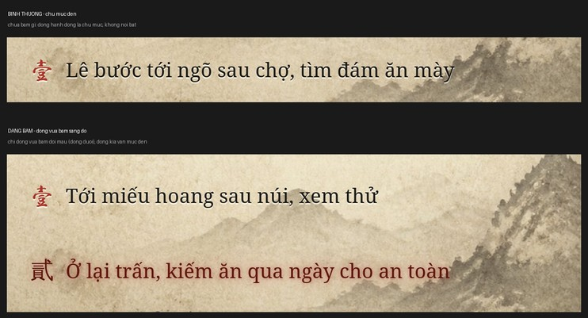

Bấm vào hành động nào thì dòng đó sáng đỏ
Bản chạy thật · đo bằng Safari (WebKit) trên iPhone 13
Anh muốn bấm vào dòng hành động nào thì dòng đó sáng đỏ lên để người chơi biết
mình bấm đúng. Đã làm xong.

Trên: chưa bấm, chữ mực đen. Dưới: đang bấm, chỉ dòng vừa bấm
sáng đỏ, dòng còn lại vẫn mực đen.
Làm thế nào
- Bấm vào dòng nào thì chỉ dòng đó đổi sang đỏ đậm, kèm quầng sáng đỏ mờ.
- Số 壹 貳 ở đầu dòng cũng đổi đỏ theo.
- Đỏ giữ tới khi truyện mới hiện ra, rồi tự trở lại màu mực.
- Nếu mạng lỗi thì bỏ đỏ ngay — không để dòng kẹt màu đỏ gây hiểu nhầm.
Một chỗ tôi phải sửa lại giữa đường
Lần đầu tôi làm đổi màu ngay khi bấm. Chạy thử thì không thấy đỏ đâu cả —
vì game trả lời quá nhanh (dưới 0.1 giây), danh sách hành động được dựng lại
trước khi mắt kịp nhận ra màu. Đo được: 0 dòng đỏ.
Đã sửa: giữ đỏ tối thiểu 320 ms rồi mới thay truyện.
Đo lại: đúng 1 dòng đỏ, đúng dòng vừa bấm, sau đó tự tắt.
Chọn màu đỏ: phải đọc được, không chỉ "đỏ"
Đây là chỗ tôi đo nhiều nhất. Đỏ son của game (#a8352a) nhìn đẹp
nhưng không đọc được trên nền giấy. Tôi đo màu nền thật phía sau chữ
trên ảnh chụp: (165,151,124) — tối hơn tôi tưởng.
| Màu đỏ | Tương phản | Kết luận |
|---|
#a8352a đỏ son gốc | 2.28:1 | Không đọc được |
#8a2a1e (lần thử 1) | 3.01:1 | Vẫn chưa đủ |
#5e150f (đang dùng) | 4.62:1 | Đạt |
Mức tối thiểu để đọc được là 4.5:1. Con số 4.62:1
là đo trên ảnh chụp thật, không phải tính trên giấy.
Vẫn ra đỏ, không thành nâu đen: đếm điểm ảnh ngả đỏ trong vùng chữ —
trước khi bấm 5.9%, khi bấm 47.7%.
Chữ vẫn sắc nét: độ sắc nét p90 chỉ giảm 7 → 6.
Đã kiểm những gì
- Bấm dòng thứ hai trong 2 dòng: chỉ dòng thứ hai đỏ, dòng đầu vẫn mực đen.
- Bấm xong chờ: đỏ tự tắt, truyện mới hiện, danh sách mới bình thường.
- Giả lập lỗi mạng: đỏ được bỏ ngay, hiện thông báo lỗi, không kẹt màu.
- Bấm liên tục khi đang tải: không đánh dấu nhầm dòng.
- Không lỗi JS. Bộ test: 124 và 161 đạt, 0 hỏng.
- Sửa cả hai bản:
game/play.html và docs/game/play.html.
Vào game thử